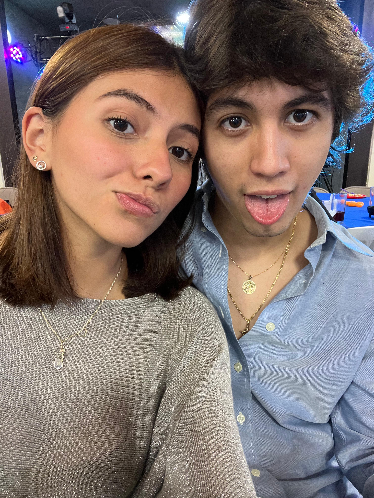

Joel Gómez López
¿Quién soy?
Soy una persona que valora profundamente el aprendizaje continuo y el crecimiento personal. Me gusta enfrentar retos con determinación y encontrar soluciones prácticas a los problemas que se presentan en el día a día. Disfruto trabajar con otras personas porque creo que las mejores ideas surgen cuando se combinan la creatividad, el esfuerzo en equipo y la pasión por construir algo que importe.
Actualmente vivo en Xalapa y estudio en la Universidad Anáhuac, donde he encontrado el espacio ideal para desarrollar tanto mi intelecto como mi visión emprendedora. Me considero una persona inteligente, muy motivada y con una fuerte capacidad para mantener el enfoque incluso en los momentos más desafiantes.
Me encanta compartir momentos con mis amigos, crecer junto a ellos y rodearme de personas que también sueñan en grande. Soy alguien determinado, con metas claras y el compromiso absoluto de transformar mis ideas en realidades que dejen huella.
Mi Educación
Formación Académica
Durante mi formación académica he desarrollado habilidades tanto técnicas como creativas. Actualmente estudio la carrera de Finanzas y Contaduría Pública en la Universidad Anáhuac Xalapa, donde he encontrado una sólida base para comprender los negocios desde una perspectiva estratégica.
Previamente estudié un año y medio en el Tecnológico de Monterrey, campus Puebla, en la carrera de Ingeniería en Tecnologías Computacionales, donde adquirí conocimientos fundamentales en programación, lógica computacional y desarrollo digital.
Gracias a esta combinación de experiencias, he aprendido a construir soluciones digitales que van desde sitios web hasta plataformas interactivas, siempre buscando unir el aprendizaje teórico con la aplicación práctica a través de proyectos reales. Actualmente, me encuentro enfocado en mejorar mis habilidades en áreas clave como inteligencia artificial, automatización y desarrollo de nuevas tecnologías que generen impacto en el mundo empresarial.
Mis Metas
Keep moving forward
Mis Intereses
Las cosas que me apasionan construyen la persona en la que me estoy convirtiendo.
Tecnología e Innovación
Me apasiona crear soluciones que transformen la vida de las personas. Desde el desarrollo de inteligencia artificial hasta la automatización de procesos, encuentro belleza en construir el futuro.
Espiritualidad y Conciencia
Creo profundamente en el equilibrio entre mente, cuerpo y alma. Me interesa la metafísica, la sabiduría ancestral y la búsqueda de propósito a través de la introspección y el crecimiento espiritual.
Cultura y Viajes
Amo conocer nuevas realidades, idiomas y formas de ver el mundo. Viajar me conecta con la humanidad y me inspira a crear con una perspectiva más amplia y compasiva.
Mis Habilidades
No soy solo un desarrollador. Soy una combinación precisa de creatividad, lógica y visión estratégica.
Frontend Dev
HTML, CSS, JS, UI responsive, animaciones, diseño web moderno.
Automatización IA
Uso de agentes inteligentes, chatbots, sistemas conectados y IA aplicada.
Backend / Lógica
APIs, Firebase, lógica de base de datos, flujos y estructura de software.
Product Thinking
Entender la necesidad, diseñar una solución y convertirla en valor real.
Storytelling Visual
Contar ideas con diseño, emoción y estructura visual convincente.
Espíritu Emprendedor
Liderazgo, mentalidad de crecimiento, fuego interno y visión de impacto global.